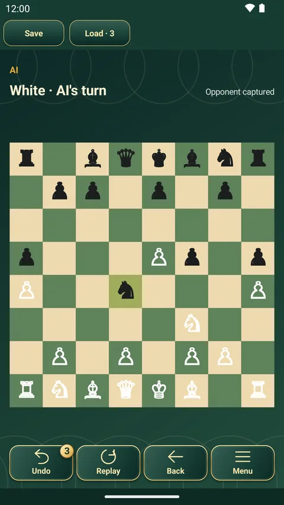

เกมกระดานคลาสสิก › เกม › หมากรุกสากล

หมากรุกสากล
Chess
เกมวางแผนคลาสสิกของโลก แต่ละฝ่ายมีหมาก 16 ตัวและเป้าหมายเดียวคือรุกจนคิงของอีกฝ่าย เรียนวิธีเดินได้ในบ่ายเดียว แล้วใช้เวลาอีกหลายปีเพื่อเก่งขึ้น
วิธีเล่นและกติกาหมากรุกสากล
- เป้าหมาย: รุกฆาตคิงของฝ่ายตรงข้าม คือคิงถูกโจมตีและหนีไม่ได้
- ฝ่ายขาวเดินก่อน (ก่อนเริ่มเกมเปลี่ยนให้ฝ่ายดำเดินก่อนได้) ผลัดกันเดินฝ่ายละหนึ่งตา
- เรือเดินตรง บิชอปเดินทแยง ควีนเดินได้ทั้งสองแบบ ม้าเดินเป็นรูปตัว L และคิงเดินหนึ่งช่อง
- เบี้ยเดินหน้าหนึ่งช่อง หรือสองช่องจากแถวเริ่มต้นถ้าทั้งสองช่องว่าง กินทแยงไปข้างหน้าหนึ่งช่อง เมื่อถึงแถวสุดท้าย ให้เลือกเลื่อนขั้นเป็นควีน เรือ บิชอป หรือม้า
- เดินไปที่ช่องที่มีหมากฝ่ายตรงข้ามคือการกินหมากนั้น เมื่อคิงถูกโจมตี (รุก) ต้องแก้ทันที
- เข้าป้อมได้เมื่อคิงและเรือยังไม่เคยเดิน ช่องระหว่างกันว่าง คิงไม่ถูกรุกและไม่ผ่านหรือลงช่องที่ถูกโจมตี เดินคิงสองช่องไปทางเรือ แล้วเรือจะย้ายมาอยู่ข้างคิง
- กินผ่าน: เมื่อเบี้ยคู่ต่อสู้เดินสองช่องจากแถวเริ่มต้นมาหยุดข้างเบี้ยของคุณ ในตาถัดไปทันที คุณกินได้โดยเดินเบี้ยทแยงไปยังช่องที่เบี้ยนั้นเพิ่งผ่าน
- แอปตัดสินเสมออัตโนมัติเมื่อไม่มีตาเดินที่ถูกกติกาแต่ไม่ถูกรุก ตำแหน่งเดิมและฝ่ายที่ต้องเดินตรงกันสามครั้ง แต่ละฝ่ายเดิน 50 ตาโดยไม่กินหมากหรือเดินเบี้ย หรือแอปยืนยันได้ว่าหมากที่เหลือรุกฆาตไม่ได้
หมากรุกสากลในแอปนี้
- เล่นกับคอมพิวเตอร์ระดับ Easy, Normal หรือ Expert หรือกับเพื่อนบนเครื่องเดียว
- AI เปิดเกมจากตำราเปิดหมากในตัว แล้วคิดเองต่อจากนั้น
- นาฬิกาจับเวลา (เลือกได้) ย้อนตา และดูรีเพลย์ทั้งเกม
- ในแอปฟรีเดียวกันยังมีเกมกระดานคลาสสิกอีก 11 เกม เล่นออฟไลน์ได้ทั้งหมด

เกมอื่น ๆ ในแอป
 หมากรุกสัตว์
หมากรุกสัตว์ หมากรุกจีน
หมากรุกจีน โชงิ
โชงิ โกะโมกุ
โกะโมกุ หมากฮอส
หมากฮอส สี่เรียง
สี่เรียง หมากข้ามจีน
หมากข้ามจีน ลู่จ้านฉี
ลู่จ้านฉี ลูโด
ลูโด หมากเครื่องบิน
หมากเครื่องบิน ยุตโนรี
ยุตโนรีเล่นหมากรุกสากลฟรี
บนโทรศัพท์และแท็บเล็ต Android ไม่ต้องใช้อินเทอร์เน็ต